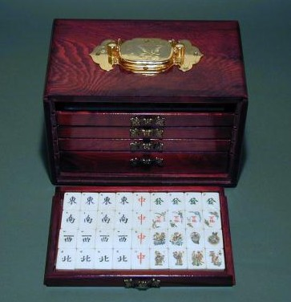
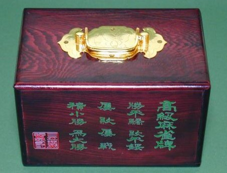

新牌といっても、購入したのはもう２０年ほど前。わざわざ上海から輸入した５セットのうちの１セット。別に５セットも欲しかったわけではない。σ(-_-)は２セットで充分だったが、中国側が最低５セット注文して貰わないと輸出できないと云ってきたので、仕方なしにそれだけ発注した。そしたら今度は「先に金を中国銀行の指定口座に送れ」という。
そこで某都市銀行へ出向き、為替手続きやら輸入認証やら、なんだかワケのわからん手続きをいろいろして送金した。いまだったら手続きだってもっと簡単、というか電話を２，３本回架けるだけで事は済むと思うが、当時は結構苦労した。しかし牌は１筒の一つ一つに「上・海・製・造」なんて彫ってあって結構気に入っている。

コンピュータで２０年前のものと云ったら前世紀の遺物。日本刀で200年前といったら新作同様（新々刀という）。麻雀牌で骨董牌といえるのは、せめて50年以上前（1950年以前）に製造された牌。そこで1980年代の牌となれば、とても骨董牌とはいえないが、思い出があるのでＵＰすることにした。(^0^；
そんなわけで、間違いなく牌は当時の上海物だが、せっかくの牌が鮮明に写っていない。(_
_； これではせっかくの上海牌の特徴がよくわからん。。。。m(_ _)m

箱も雰囲気があっていかにも中国風であるが、実は中身（牌）とは別物。正面左下の赤いマーク、よく見ると「日本遊戯協会印」とある。実はこの箱は東急ハンヅで買ってきた。（笑）
といっても箱だけ売っていたわけではない。10年ほど前、ぶらりと東急ハンヅのゲーム売場へ行ったら、中国牌がこの箱に入って売られていた。その中国牌は中国牌というだけでどうしようもない牌だったけど、この箱が欲しさに３セットほど買ってしまった。というのは、わざわざ上海から輸入した牌、実は入れ物がチャチで不満だった。そこでいまは思い出の上海牌がこの箱に収まっているというわけである。
※この箱もたぶん中国で造られた物だと思う。
＃この箱、いまでも東急ハンヅで売っているんじゃないかな？（もちろん、牌入りで）